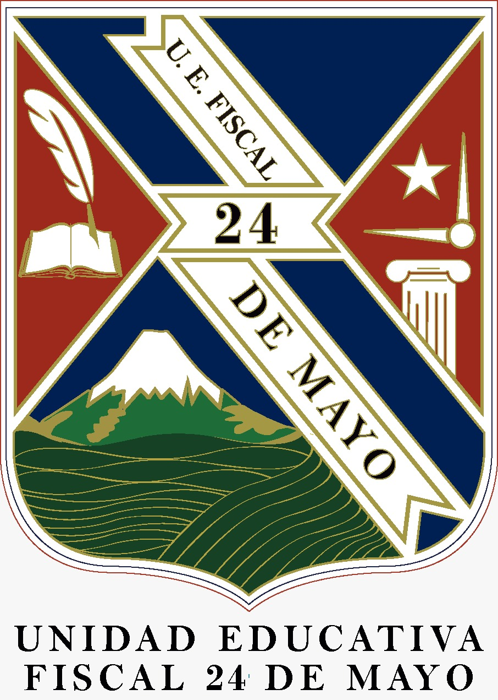

Liliana Chora |
Date of Birth:
Age: 22 years old
SCHOOL: Latinoamerica Unida, in the south of Quito.

HIGH SCHOOL: Colegio 24 de mayo and she graduated at 17 years old in 2017.
UNIVERSITY: University of the Armed Forces, in 2018
She waited two years trying to pass the SER BACHILLER exam.
Entered college at the age of 19.
Passed the SER BACHILLER exam on the third attempt.
Now studies at ESPE University.
Studying Information Technology Engineering.